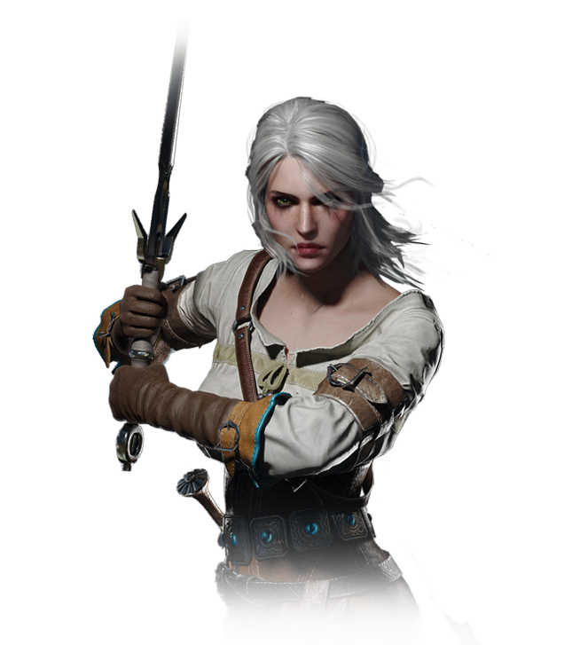

Ana menü |
Yaratık külliyatı |
Merkezimiz |
Vesemir |
Rivyalı Geralt |
Eskel |
Lambert |
Ciri |
 |
 |
 |
 |
 |
En yaşlı witcherdır.Geralt,Eskel ve Lamberti o eğitmiştir.Uzmanlık alanı kurt adamlardır. |
Geralt en ünlü witcherlarından biridir.Sadece canavarlar değil Geralt aynı zamanda krallıkları hatta dünyayı kurtarmıştır.Eğer bir vampir sorunu yaşıyorsanız çağırmanız gereken ilk witcherdır. |
Profesyonellik denince akla ilk gelen witcherlardan biridir.Simya alanında kendini uzmanlaştırmıştır. | En asabi ve agresif witcherlardandır.Arada bu agresifliği müşterilere de yansıtsa da bu agresifliği sayesinde işini hızlı ve temiz yapar.Eğer kapınıza bir hayaletin dadandığını düşünüyorsanız Lambertle iletişime geçmenmizi öneririz. | Aslında kraliyet üyesi olan Ciri Geraltın da etkisiyle witcher olmayı tercih etmiştir.Mutasyona işlemi geçirmeyen Ciri'nin kendisine has özel yetenekleri vardır.En genç kurt okulu witcherıdır |
Witcherlar olayın zorluğuna ve ciddiyetine göre ücret konuşmasını olayı biraz araştırdıktan sonra yapar.Eğer vericek paranız yoksa witcher süpriz yasası nı kullanabilir ya da işi hiç almayabilir.Witcherlarla yaşayacağınız fiyat ücretlendirmesi sorunları şirketimizin yükümlülüğünde değildir. |
||||